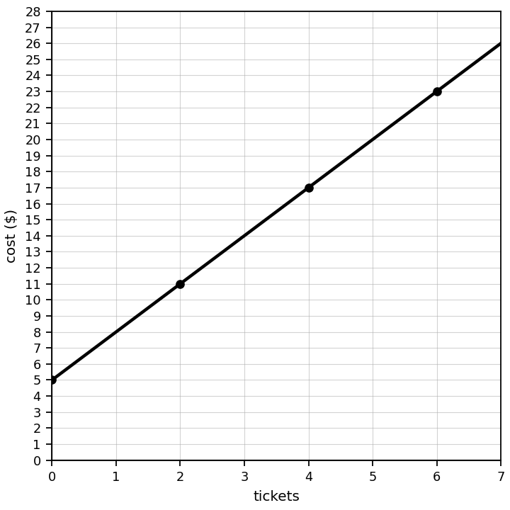
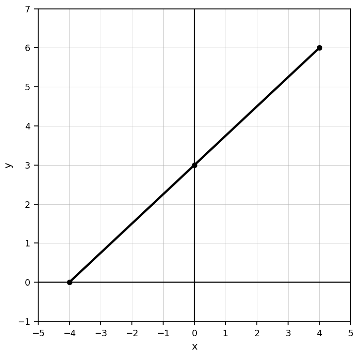
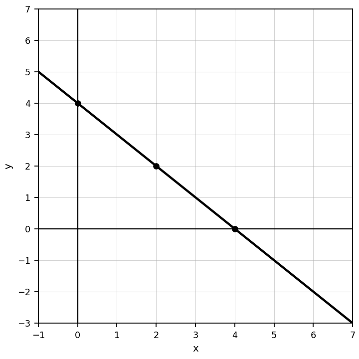

A card shows the table below. Identify the representation type and describe what changes from one row to the next.
| $x$ | 0 | 1 | 2 | 3 |
|---|---|---|---|---|
| $y$ | 5 | 8 | 11 | 14 |
Use the ticket-cost graph to write an equation for total cost $C$ in terms of tickets $t$.

The equation is $y=3x+5$. The context says, “There is a 5 dollar fee and then 3 dollars for each item.” Explain how the equation and context match. Then make a three-row table.
A team claims that the table, equation, and context below all match. Critique the claim. If they do not all match, revise one representation so the web is consistent.
| $x$ | 0 | 1 | 2 |
|---|---|---|---|
| $y$ | 2 | 5 | 8 |
$y=3x+2$
A 3 dollar starting fee plus 2 dollars per ticket.
Compute: $-\dfrac{5}{9}\cdot1\dfrac{2}{3}$
Compute: $-\dfrac{3}{5}\div\left(-1\dfrac{1}{10}\right)$
Compute: $-5\dfrac{1}{2}\div\left(-\dfrac{3}{4}\right)$
Compute: $10\dfrac{5}{8}+\left(-2\dfrac{1}{2}\right)$
Compute and explain your first step: $12\dfrac{3}{4}-\left(-1\dfrac{5}{8}\right)$
Compute and explain the sign of the product: $-2\dfrac{7}{9}\cdot3\dfrac{1}{7}$
A student says, “Subtracting a negative number always makes the answer negative.” Decide whether the statement is true or false and justify your conclusion with examples.
Create a recipe, money, or temperature situation that requires multiplying or dividing rational numbers. Write the expression and explain why the operation fits the situation.
Use the graph to estimate the $x$-intercept and the $y$-intercept.

Write the ordered pairs from the table and identify which point would be on the $y$-axis.
| $x$ | 0 | 2 | 4 |
|---|---|---|---|
| $y$ | 4 | 2 | 0 |
Use the graph to describe what happens to $y$ as $x$ increases. Include at least two points as evidence.

Design a coordinate-plane graph with one point on each axis and one point in Quadrant II. List the coordinates and explain how you know each point belongs where you placed it.